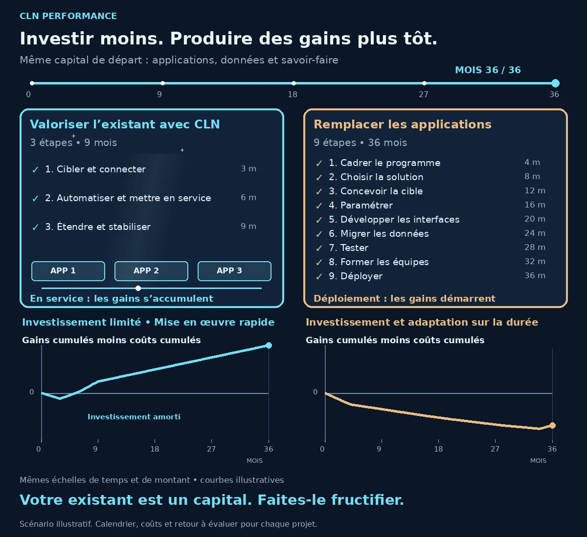

Ciblé
Intervenir sur un besoin précis et rechercher un gain mesurable.
Valoriser votre écosystème applicatif
CLN Performance est une petite structure spécialisée qui intervient de manière ciblée et chirurgicale dans votre écosystème applicatif : un périmètre précis, des évolutions maîtrisées et des perturbations limitées.
Nous relions vos applications existantes, enrichissons vos données et automatisons les tâches répétitives pour valoriser vos outils et le savoir-faire de vos collaborateurs, avec des résultats mesurables.

Partir de ce qui fait déjà votre force
Vos applications représentent des années d’investissement. Vos collaborateurs en connaissent les usages, les subtilités et les liens avec leur métier. Cette maîtrise est une richesse essentielle au fonctionnement de votre entreprise.
Remplacer une application mobilise bien plus qu’un budget logiciel : migration des données, adaptation des interfaces, formation et réorganisation. CLN recherche d’abord comment créer de nouveaux gains à partir de ce capital.
Automatiser ce qui peut l’être
Une interface moderne peut faciliter le travail. Les gains de productivité viennent aussi des tâches que l’on supprime, des ressaisies que l’on évite et des traitements que l’on automatise.
Nos pipelines font circuler et enrichissent les données entre vos applications. Moins de manipulations et de passages de relais : vos équipes peuvent se concentrer sur les exceptions, les décisions et leur métier.
Investir au bon endroit
Un premier périmètre ciblé permet de limiter l’investissement initial et de rechercher des gains dès les premières mises en service. Les améliorations peuvent ensuite être étendues progressivement.

Du mois 9 au mois 36, les automatisations restent en service et les gains continuent de s’accumuler.
Les deux graphiques utilisent les mêmes échelles et montrent les gains cumulés moins les coûts cumulés, sans montants chiffrés. Le franchissement de zéro représente l’amortissement. Dans cet exemple, le remplacement n’est pas encore amorti au mois 36.
Investir moins au départ. Mettre en œuvre rapidement. Produire des gains plus tôt.
La valorisation de l’existant est privilégiée lorsqu’elle est pertinente ; un remplacement peut rester nécessaire. Le temps libéré n’est pas automatiquement une économie financière : les coûts, les indicateurs et la période de mesure sont définis ensemble.
La démarche CLN
Intervenir sur un besoin précis et rechercher un gain mesurable.
Réduire les tâches répétitives et les interventions manuelles nécessaires.
Fiabiliser les données, structurer les traitements et assurer leur traçabilité.
Patrick est votre interlocuteur pour construire l’amélioration avec les personnes concernées. Notre objectif est un bénéfice durable et votre autonomie, sans chercher à installer une facturation récurrente. Une rémunération liée aux bénéfices effectivement constatés peut être convenue selon le projet, avec des critères définis avant l’intervention.
Découvrir notre façon de travailler